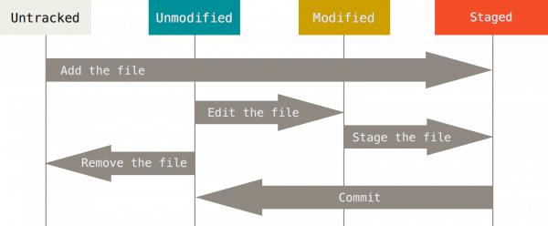

Auteur : Renaud BURCK


Un gestionnaire de version
Ce qui veut dire que l'on peut garder la chronologie des modifications

Décentralisé
On a tous une copie du dépôt et on peut continuer à enregistrer ses modifications hors connexion

On peut aussi les partager avec les autres directement sans passer par le dépôt distant
L'intérêt de Git couplé à Gitlab pour notre groupe

Git fonctionne avec les fichiers binaires de grande taille mais il vaut mieux travailler avec des fichiers textes.
Il faut télécharger l'installeur sur https://git-scm.com/download/win et faire Suivant à chaque page
On prend son gestionnaire de paquet préféré et on choisit le paquet git ! Au cas où Lien Unix
Dans ce répertoire, les fichiers seront éditables
cd mon/repertoire/à/suivre
git init .
Les fichiers ne pourront pas être édités. Cela sert principalement si vous voulez créer un dépôt distant centralisé.
cd mon/repertoire/à/suivre
git init --bare .
Les deux commandes vont créer un répertoire nommé '.git'. C'est le répertoire qui va stocker quasiment tout ce que Git stocke et manipule.
cd mon/repertoire/ou/mettre/les/fichiers
git clone adresse_du_dépôt
Un sous-répertoire va être créé avec le nom court du dépôt et il contiendra tous les fichiers clonés ainsi que le répertoire .git

Les branches sont un moyen efficaces de faire des modifications sur des fichiers sans casser le fonctionnement principal de notre application
# dans le répertoire du projet git
## lister les branches
git branch # rajouter -v si vous voulez le texte du dernier commit sur la branche
# créer une branche
git checkout -b nom_de_ma_branche
# Supprimer une branche
git branch -d nom_de_la_branche_a_supprimer
Créer une branche à son nom depuis la branche dev
Non suivi : Le fichier est présent dans le répertoire mais n'est pas ajouté à l'index git. Non modifié : Le fichier est dans le répertoire et ajouté à l'index avec la commande git add. Si des changements ont été faits, ils n'ont pas été suivis. C'est aussi le statut des fichiers après un enregistrement dans le dépôt. Modified state : Le fichier suivi a été édité mais les changements n'ont pas été enregistrés dans le dépôt git. Staged state : Le fichier a été enregistré dans le dépôt git et est prêt à être envoyés sur le dépôt.

# création d'un fichier texte quelconque
touch text.txt
#Ajout du fichier à l'index
git add ./test.txt
#On regarde les modifications du dépôt le fichier est indiqué comme nouveau
git status
#Editer le fichier et ajouter du contenu
notepad ./test.txt
#On regarde les modifications du dépôt le fichier est indiqué comme nouveau et édité
git status
#Ajout des modifications à l'index
git add ./test.txt
# On enregistre les modifications dans le dépôt local
git commit -m "Ajout et édition du fichier test.txt"
#On regarde les modifications du dépôt le fichier n'est plus dans la liste
git status
Ajouter un fichier quelconque nommé mon_nom.txt à son dépôt Faire quelques modifications dans ce fichier et le "commité"
Plus sérieusement, je préconise des commits très réguliers ( dès qu'on a finit d'écrire sa fonction / son paragraphe par exemple) et des pushs quotidiennement
Cela permet d'avoir des commits qui ont un impact limité et sur lesquels on peut revenir rapidement. Cela force aussi à décrire ce que l'on fait très souvent et cela permet la compréhension du travail réalisé lors qu'une autre personne va relire votre description de commit. (NB c'est important et vous verrez pourquoi).
Les pushs quotidiens permettent de limiter le nombre d'envoi au dépôt distant et permettent par exemple de faire un cylce de travail en équipe du genre :
# Pousser ses modifications
git push
# Si la branche n'existe pas sur le dépôt distant.
git push --set-upstream origin/nom_de_ma_branche
Pousser ses derniers commits sur le dépôt distant
Lorsque l'on collabore a plusieurs, il faut évidemment récupérer les modifications des autres
# Voir ce qui a été modifié
git fetch
git diff ..origin/nom_de_ma_branche
# Récupérer les changements
git pull
Récupérer les dernière modifications sur la branche dev distante et mettre à jour votre branche dev distante
Souvent au moment de push ses modifications, on se retrouve avec des conflits car des modifications ont été faites par les autres développeurs pendant que vous étiez en train de faire votre code. Il faut alors résoudre les conflits
Il existe plusieurs façons de faire. En voici une
# On met de côté ce que l'on a fait
git stash
# Récupérer les changements
git pull
# Ajouter ses changements
git stash apply
# Résoudire les conflits de merge
git mergetool
# Ajouter les fichiers corrigés
git add .
# Faire un commit de merge
git commit -m "Merge de la branche dev distante et de la branche dev local"
# On vide le stasg
git stash drop
# ON pousse tout cela
git push
Des modifications ont été faites sur votre branche personnelle sur le dépôt distant. Corrigez les !